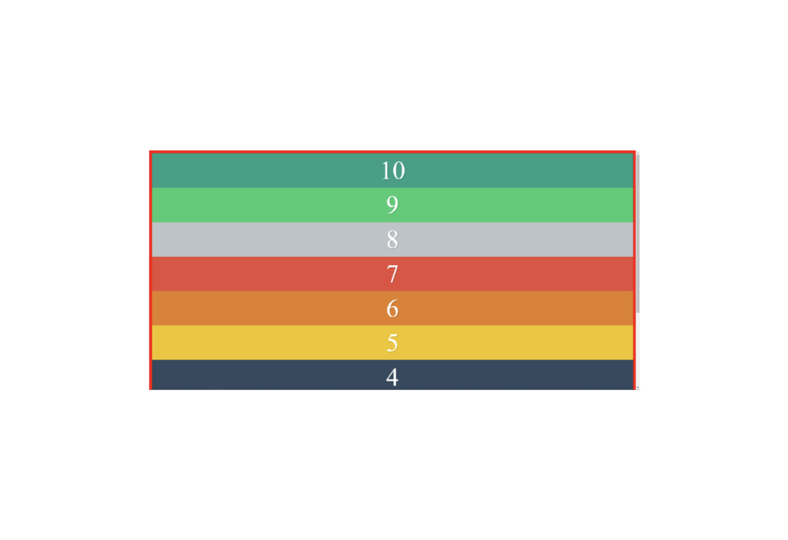

Volver atras
Ejercicio
Ejercicio 2 – flex-direction
Realiza un diseño de divs que se asemeje lo máximo posible al siguiente, usando
Flexbox. Debes utiliza flex-direction. Salvo que tengas una resolución de pantalla
muy grande, será normal que se muestre la barra de scroll vertical. Debes mostrar
los 10 divs, en total, y con sus números en orden inverso.
